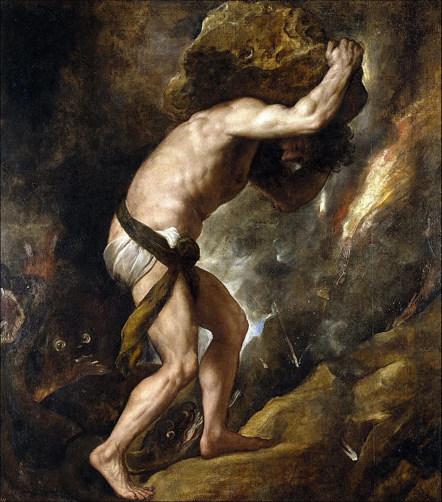

Recupera
De memória, sem abrir o caderno.
De memória
O que quer cada voz numa cena?
Confirmar
Cada voz tenta conseguir algo. O conflito surge quando esse objetivo encontra resistência.
A voz de uma personagem é a posição do autor?
Confirmar
Não automaticamente. O autor pode dar voz a posições que não defende.
Que indicação usaste na tua microcena: ação, pausa ou som? Que efeito teve?
Vê
Observa primeiro. Lê depois.
Lê a cena de Lia. O que sabe ela, e o que lhe esconderam?
Exemplo escrito para esta sessão.
O objetivo é o que a personagem procura; a ação é o que faz; o obstáculo dificulta essa tentativa. O argumento narrativo desenvolve essas relações numa história com consequências.
Decide
Primeiro em silêncio, cada pessoa. Depois em grupo.
Sem ecrã
Primeiro, em silêncio
Distingue objetivo, ação e obstáculo.
Depois, em grupo
- Propõe duas ações e uma consequência para cada uma.
- Escolhe um desfecho e explica como decorre das decisões anteriores.
Comparar razões
A consequência deve nascer da ação e das condições construídas. Reconhecer um erro não apaga automaticamente os seus efeitos.
Faz
Em papel ou no ficheiro do grupo.
Em papel
Identifica a escolha decisiva da tua cena. Quem pode agir e que alternativa tem?
Escreve o argumento v1: situação inicial, conflito, escolha e consequência. Escolhe teatro, cinema ou áudio e indica uma razão para esse formato.
GuardarArgumento narrativo, versão 1.
Rever com outra pessoa
Um colega resume a história em quatro momentos. Revê a ligação mais frágil entre a escolha e a consequência.
Leva
Em papel, antes de sair.
Em papel
Em papel, antes de sair
Numa frase: o que muda numa história quando a personagem pode escolher?
Confirma
- A escolha faz avançar a história.
- O conflito é compreensível.
- O desfecho decorre das ações.
O registo fica neste aparelho.